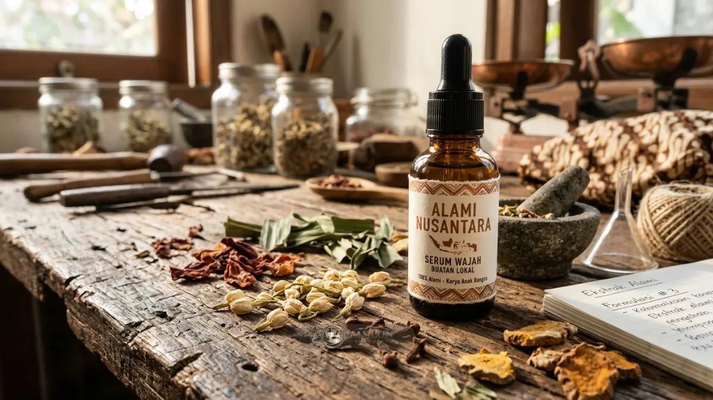
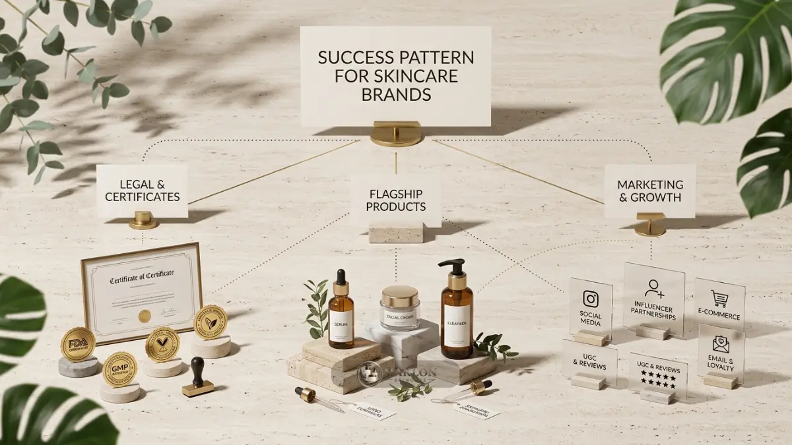

Studi kasus maklon skincare OEM menunjukkan brand lokal berhasil saat memulai dari produk andalan fokus, memilih pabrik berizin, menyiapkan legalitas awal, dan menguji pasar bertahap.
Catatan: tiga studi kasus berikut berupa skenario ilustratif yang disusun dari pola umum brand lokal, bukan data brand tertentu.
- Brand lokal yang berhasil umumnya memulai dengan produk andalan yang fokus.
- Skema OEM cocok untuk pembeda formula, ODM cocok untuk kecepatan peluncuran.
- Legalitas dan sertifikasi halal paling aman disiapkan sejak tahap formulasi.
- Produksi bertahap menjaga arus kas dan memberi ruang belajar dari konsumen.
Apa yang Membuat Brand Lokal Berhasil dengan Maklon Skincare OEM?
Brand lokal berhasil dengan maklon skincare OEM ketika konsepnya jelas, target pasarnya spesifik, kualitas produknya konsisten, dan pemiliknya disiplin mengelola stok, legalitas, serta pemasaran.
Peluang pasarnya nyata. Data Kemenperin mencatat pendapatan industri kosmetik naik sekitar 48 persen, dari sekitar Rp21,45 triliun pada 2021 menjadi sekitar Rp31,77 triliun pada 2024.
Jumlah industri kosmetik dalam negeri menurut BPOM juga melewati 1.500 pada akhir 2025.
Pasar yang tumbuh sekaligus ramai berarti keberhasilan jarang datang dari produksi saja.
Pembeda utama terletak pada ketajaman konsep, standar mutu sediaan, dan kedisiplinan eksekusi di pasar, seperti yang tergambar pada tiga skenario berikut.
Bagaimana Brand Serum Wajah Fokus Satu Masalah Kulit Bertumbuh?
Brand serum yang fokus pada satu masalah kulit dapat tumbuh dengan skema OEM karena formula khusus memberi pembeda dan varian sedikit menjaga arus kas.
Latar belakang: Seorang pendiri melihat banyak konsumen mengeluhkan tampilan kulit kusam akibat paparan sinar matahari dan polusi kota. Ia memilih merilis satu produk andalan berupa serum dengan satu bahan aktif hero, bukan serangkaian paket lini lengkap.
Strategi: Ia menyusun brief formula detail dan memakai skema maklon skincare OEM agar komposisi sediaannya memiliki pembeda unik dibanding produk sejenis. Produksi perdana dibuat dalam kuantitas terkontrol, sesuai kemampuan daya serap tim pemasarannya.
Tantangan: Proses revisi formula memakan beberapa putaran sampel uji coba di laboratorium karena tekstur dan sensasi penyerapan di kulit awalnya belum sesuai ekspektasi.
Pelajaran: Brief formula yang spesifik sejak awal serta penentuan batas putaran revisi dalam kontrak terbukti menghemat banyak waktu. Fokus pada satu produk tunggal juga sangat memudahkan penyusunan materi edukasi konten promosi kepada calon pelanggan.
Bagaimana Brand Perawatan Harian Dewasa Muda Memakai ODM?
Brand perawatan harian dengan formula ODM dapat meluncur lebih cepat karena formula sudah teruji pabrik, sehingga brand fokus pada identitas, kemasan, konten, dan layanan pelanggan.
Latar belakang: Sebuah brand baru menyasar segmen dewasa muda yang mencari rutinitas perawatan praktis: pembersih wajah, pelembap ringan, dan tabir surya.
Strategi: Brand memilih formula dari katalog maklon skincare ODM yang telah teruji stabilitasnya, lalu melakukan sedikit kustomisasi aroma alami dan desain kemasan luar. Waktu pengembangan menjadi jauh lebih singkat, sehingga alokasi dana dapat dialihkan untuk memperkuat identitas visual dan konten media sosial.
Tantangan: Proposisi pembeda sediaan tidak terlalu eksklusif karena basis formula serupa dapat ditawarkan oleh pabrik maklon kepada brand lainnya.
Pelajaran: Brand menutup celah tersebut lewat kekuatan narasi identitas merek, keramahan layanan interaktif, dan pembentukan komunitas pelanggan. Skema ODM terbukti sangat efektif untuk validasi pasar awal. Setelah tercipta basis data repeat order yang stabil, brand dapat mulai merancang produk OEM eksklusif sebagai pembeda utama.

Bagaimana Brand Skincare Halal Menyiapkan Diri?
Brand skincare halal yang menyiapkan sertifikasi sejak tahap formulasi lebih siap menghadapi kewajiban halal kosmetik yang berlaku setelah 17 Oktober 2026.
BPJPH menyatakan produk kosmetik wajib bersertifikat halal setelah 17 Oktober 2026, dan pada Mei 2025 tercatat sudah ada 81.343 produk kosmetik dalam negeri yang bersertifikat halal resmi.
Strategi: Brand memilih mitra pabrik maklon skincare yang telah berpengalaman dengan sistem jaminan produk halal, memverifikasi status kehalalan setiap bahan baku sejak penyusunan brief formulasi, serta menyiapkan berkas pendukung administrasi bersama tim regulasi pabrik.
Tantangan: Beberapa bahan aktif turunan memerlukan penelusuran asal usul (traceability) yang ketat dan kelengkapan dokumen pemasok, sehingga formula perlu disesuaikan beberapa kali.
Pelajaran: Memasukkan klausul persyaratan halal ke dalam brief formula sejak awal mencegah risiko perombakan racikan di tengah jalan. Persiapan dini menghemat biaya riset ulang dan menghindarkan brand dari penundaan jadwal peluncuran komersial.
Apa Pola yang Sama dari Skenario Brand Lokal yang Berhasil?
Skenario brand skincare lokal yang berhasil dengan maklon memiliki pola sama: produk andalan fokus, pabrik berizin, legalitas awal, stok bertahap, dan pemasaran konsisten setelah peluncuran.
- Produk andalan fokus: Mengawali bisnis dengan 1 sampai 3 produk andalan yang memiliki pesan komunikasi jelas dan mudah dipahami konsumen.
- Pabrik berizin dan komunikatif: Bekerja sama dengan pabrik CPKB yang transparan mengenai proses formulasi, struktur biaya, dan jadwal antrean produksi.
- Legalitas disiapkan di awal: Pendaftaran notifikasi BPOM dan sertifikat halal dimasukkan ke dalam kalender kerja sejak fase uji sampel sediaan.
- Manajemen stok bertahap: Kuantitas pesanan produksi perdana disesuaikan dengan kapasitas daya serap kanal pemasaran, bukan berspekulasi besar.
- Pemasaran berkelanjutan: Produksi konten organik, kampanye ulasan nyata, dan layanan purnajual terus berjalan konsisten setelah produk tiba di gudang.
Apa Kesalahan yang Muncul pada Brand yang Kurang Berhasil?
Brand skincare yang kurang berhasil dengan maklon umumnya terlalu banyak varian, terlambat mengurus legalitas, tidak menguji produk ke konsumen, dan kehabisan dana sebelum pemasaran berjalan.
Terlalu banyak varian di awal memecah anggaran modal dan membuat stok barang lambat terserap pasar. Legalitas yang terlambat diurus berisiko menunda peluncuran selama berbulan-bulan dan menahan perputaran kas bisnis.
Brand yang tidak meminta umpan balik dari calon pengguna nyata pada tahap sampel berisiko memproduksi massal produk yang tidak sesuai dengan selera konsumen di lapangan.
Kesalahan paling mendasar adalah menghabiskan seluruh modal untuk membiayai produksi pabrik, sehingga tidak ada sisa dana untuk beriklan. Karena itu, perhitungkan neraca bisnis Anda secara cermat melalui panduan biaya maklon skincare OEM dan margin profit.
Bagaimana Menerapkan Pelajaran Ini pada Brand Anda?
Penerapan pelajaran studi kasus dimulai dengan menentukan satu produk andalan, memilih skema OEM atau ODM, menyusun anggaran, memverifikasi pabrik, dan merencanakan peluncuran bertahap.
- Tentukan satu permasalahan kulit utama dan satu profil segmen target konsumen yang jelas.
- Pilih skema produksi yang tepat berdasarkan telaah di keunggulan maklon skincare OEM dan perbandingan skema.
- Hitung kalkulasi HPP, margin laba bersih per unit, dan estimasi titik balik modal (BEP).
- Verifikasi sertifikat izin edar, sertifikasi CPKB, dan kesiapan sistem halal pabrik mitra.
- Mulai produksi perdana dalam skala bertahap, kumpulkan ulasan konsumen, lalu tingkatkan kapasitas secara konsisten.
Panduan lengkap dari langkah awal tersedia di panduan maklon skincare OEM terbaik untuk pemula.
Rancang Keberhasilan Brand Skincare Anda
Pola keberhasilan brand lokal bersama maklon skincare OEM terbukti konsisten: fokus pada produk andalan, pilih pabrik berizin, siapkan legalitas sejak awal, dan jalankan strategi pemasaran bertahap.
Gunakan ketiga skenario di atas sebagai cermin evaluasi: tentukan skenario yang paling selaras dengan kondisi brand Anda, lalu terapkan langkah mitigasi risikonya.
Ingin merencanakan brand Anda seperti skenario sukses di atas? Diskusikan rencana bisnis Anda bersama tim konsultan kami melalui WhatsApp Konsultasi Brand Skincare untuk mendapatkan arahan teknis dan jadwal peluncuran yang realistis.